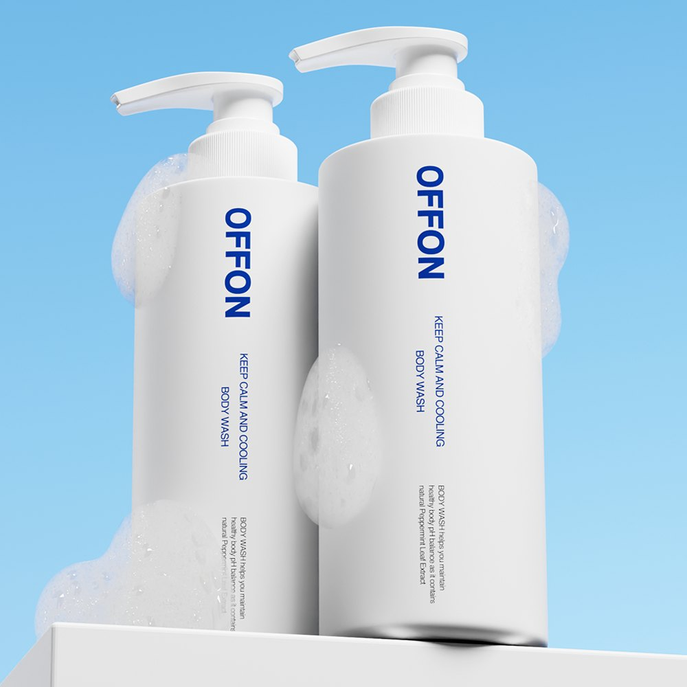
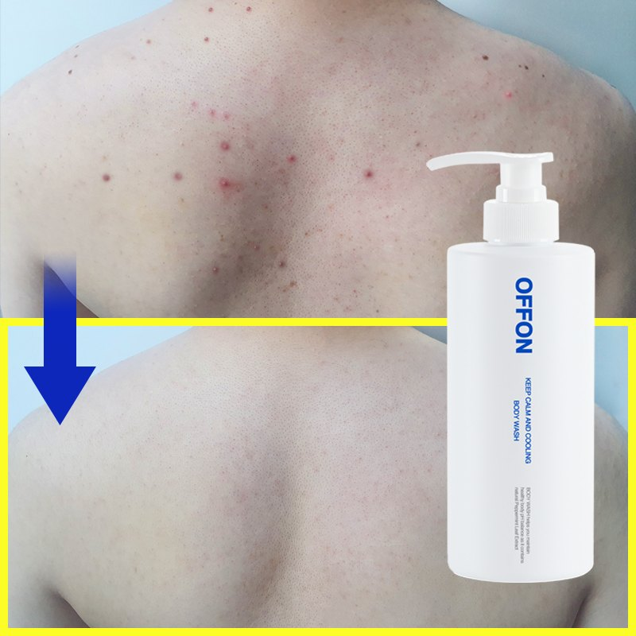

OFFON Keep Calm and Cooling Body Wash Review at a Glance
This OFFON Keep Calm and Cooling Body Wash review is for anyone fighting back acne, chest breakouts or rough, bumpy skin on the arms. OFFON (오프온) is a Korean body-care brand, and this 500ml pump bottle is its best-known product in Korea, where people call back acne deungdreum (등드름). The formula uses salicylic acid plus gentle AHA and PHA acids, and it leaves a cool, minty feeling after you rinse.
It's a weakly acidic gel (around pH 5.5) that turns into a thick, creamy foam. Korean shoppers also like its fresh aqua-floral scent, which isn't the usual "medicated" smell of acne washes.

What's Inside the Bottle
Here's what the published ingredient list includes, in plain English:
| Ingredient Group | From the Label | What It's For |
|---|---|---|
| BHA | Salicylic acid | Clears oil and dead skin from pores |
| AHA | Mandelic acid, gluconic acid | Gentle surface exfoliation |
| PHA | Lactobionic acid | Very mild exfoliation with moisture |
| Cica | 5X cica complex (centella) | Soothing |
| Hydration | Sodium hyaluronate crosspolymer, cactus and seaweed extracts | Helps skin feel less tight |
| Cooling | Peppermint leaf extract, menthol | A fresh, cool finish |


The listings we checked don't give the exact salicylic acid percentage, so we don't state one. Formulas can change; always check the bottle.
Key Details
| Item | Details |
|---|---|
| Brand | OFFON (오프온) · Korea |
| Product | Keep Calm and Cooling Body Wash |
| Size | 500ml / 500g (17.6 oz) |
| pH | Weakly acidic, around 5.5 |
| Scent | Fresh aqua-floral with a cooling finish |
| Retailer claims | Hypoallergenic-tested, PETA vegan, coconut-derived surfactants |
| Korean list price | ₩32,000 (about US$23) per 500g bottle |
| Also on | Olive Young Global and US Amazon |


Photo note: These are the 5 real product photos from the Korean listing. We didn't add any AI-generated images.
How to Use It for Back and Chest Breakouts
- Lukewarm water: Very hot showers can dry acne-prone skin and make it oilier later.
- Lather on a towel: Put 1–2 pumps on a Korean shower towel or your hands and make foam.
- Massage gently: Work it over your back, chest and shoulders in small circles. Don't scrub hard.
- Rinse well: Leftover cleanser and conditioner on the back can clog pores, so rinse along your spine and hairline.
- Light moisturizer: Finish with a non-greasy lotion. Use sunscreen on exposed skin while using acids.
A Korean tip: wash your hair and rinse out conditioner before using the body wash, so conditioner doesn't sit on your back.
How It Compares to a Regular Body Wash
| OFFON Keep Calm and Cooling | Typical Body Wash | |
|---|---|---|
| Acids | BHA + AHA + PHA | Usually none |
| pH | Around 5.5 (weakly acidic) | Often higher |
| Soothing | 5X cica complex | Varies |
| Feel after rinse | Cool and fresh | Neutral |
| Best for | Body breakouts, bumpy skin | Everyday cleansing |
Pros & Cons
✅ Pros
- Three types of gentle acids in a daily shower step.
- Weakly acidic gel with cica and hyaluronic acid.
- Creamy lather and a cooling, fresh finish.
- Big 500ml pump bottle that lasts.
⚠️ Cons
- Results are gradual and need daily use.
- Menthol and fragrance may bother very reactive skin.
- The exact salicylic acid percentage isn't listed.
Who It Suits (and Who Should Skip It)
- Great for: Back and chest breakouts, clogged pores and rough, bumpy arms.
- Great for: People who sweat a lot, from the gym or hot, humid summers.
- Maybe skip: If you're allergic to salicylates, have broken or sunburned skin, or want an unscented wash.
OFFON Body Wash FAQ
What is OFFON Keep Calm and Cooling Body Wash?
It's a 500ml Korean body wash from OFFON (오프온). It mixes salicylic acid (BHA) with mandelic and gluconic acid (AHA), lactobionic acid (PHA), a 5X cica complex and hyaluronic acid, and it has a cooling finish from peppermint leaf extract and menthol.
Does it really help back acne?
It's made and sold in Korea for back and chest breakouts (등드름), and retailers say it's registered with Korea's MFDS as a functional cosmetic for acne-prone skin. It works best as a steady daily habit. It's still a body wash, not a medicine, so see a dermatologist for painful or lasting acne.
Is it too harsh for sensitive skin?
The gel is weakly acidic (around pH 5.5) and uses coconut-derived surfactants, and retailers list it as hypoallergenic-tested. But it does contain exfoliating acids, menthol and fragrance, so patch test first and avoid broken or sunburned skin.
How cold does it feel?
It gives a fresh, minty coolness after rinsing, not an icy burn. Most Korean reviewers like it most in summer or after the gym. If you dislike menthol, this one may not be for you.
OFFON Keep Calm & Cooling Body Wash 500ml
The same Korean OFFON body wash with AHA, BHA, PHA and 5X cica, sold on US Amazon.